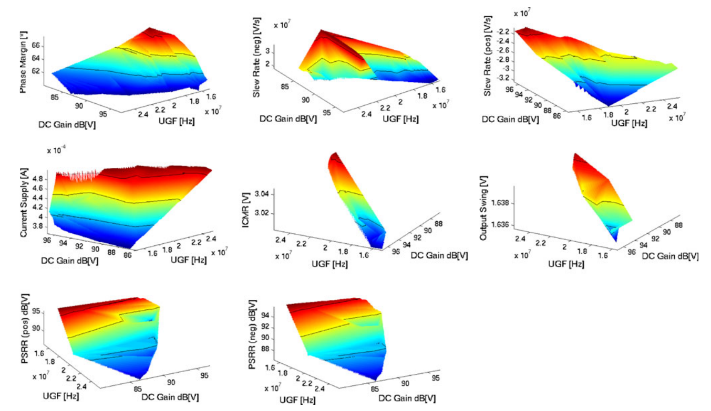
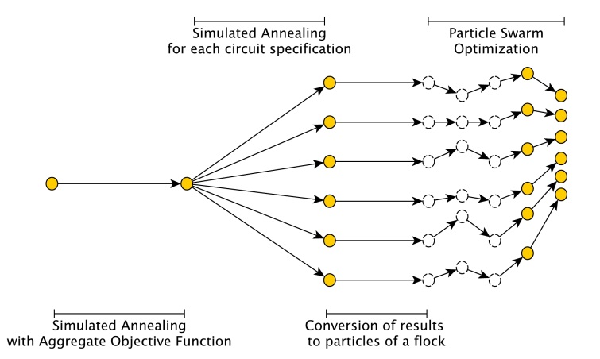

Tiago Oliveira Weber
About
| I am currently a professor at the Federal University of Santa Catarina (UFSC), Araranguá, Brazil. I was a member of the Integrated Systems Laboratory (LSI) where my work was related to the design and test of an ASIC for the Time Projection Chamber of the ALICE experiment in LHC (Large Hadron Collider) - CERN. I have obtained my Doctorate degree in Microelectronics at the University of São Paulo (USP) in 2015 and the BS degree in Electrical Engineering at the Federal University of Santa Maria in 2010. |
Research Interests
My main research interests are:
- artificial intelligence hardware (mixed-signal hardware accelerators) and analog computing.
- CAD tools for analog integrated circuits;
- optimization, metaheuristics and artificial intelligence techniques;
- data acquisition and instrumentation.
Goals
Our plans for the future are as important as where we are right now. To provide a better insight about my professional goals, I've decided to share my short and long-term objectives.
5-year goal (from 2019 to 2023): become a national leading researcher in artificial intelligence hardware (mixed-signal hardware accelerators for AI applications);
10-year goal (from 2019 to 2029): become an international leading researcher in artificial intelligence hardware; create/be part of a strong research group in the field;
Contact
E-mail: tiago.weber (at) ufsc.br
Phone: +55 48 9.111 2228
Education
Doctorate in Microelectronics - June 2015
University of São Paulo - São Paulo, Brazil
- Dissertation Title (translated from Portuguese): Synthesis of analog integrated circuits in system-level and circuit-level using modern optimization methods
- Research Synopsis: analog integrated circuits are very important in modern electronic systems, performing tasks such as analog to digital conversion, digital to analog conversion, radio frequency communication, filtering and others. The design of this type of circuit requires attending to several performance specifications, being usually performed only by experienced designers. We developed techniques for the design of circuit-level and system-level analog circuits. As the optimization core, we proposed an algorithm based on Simulated Annealing while considering multiobjective information through the use of a crossover operator. An hybrid algorithm combining the proposed algorithm with Particle Swarm Optimization was created to properly explore the Pareto front. Tests indicated the algorithms are efficient for the design of analog circuits as well as outperform many other derivative-free algorithms when applied to purely mathematical problems.
B.S. in Electrical Engineering - Jan. 2010
Federal University of Santa Maria - Santa Maria, Brazil
- Undergraduate Thesis Title (translated from Portuguese): Tool for integrated circuit synthesis with an educational approach
– Modules included:
- Analog Integrated Circuits Design
- Special Topics in Microelectronics
- Programmable Logic Systems
- Conception of Integrated Circuits
- Data Communication
- Signal Processing
Research
Here you will find:
- My research projects and goals
- My publications
Research Projects and Goals
By sharing my research projects and goals, the objective is to communicate my professional road map to current and potential collaborators (other researchers, students and companies).
Artificial Intelligence - Hardware Accelerators
This research line objective is the development of integrated circuits to provide hardware acceleration for Artificial Intelligence applications. Analog and mixed-signal solutions are being studied to improve figures-of-merit on hardware-based machine learning.
Microelectronics / Analog Design Synthesis
This research line aims at the development of techniques for analog design synthesis in circuit and system level. The objective is to advance the state-of-the art in analog circuit synthesis/optimization by bridging system-level optimization with circuit-level optimization.
2019 Research line publication goals:
- DONE Journal paper related to the SAMPA Chip (32 Channels ASIC for the ALICE TPC and MCH Upgrades)
- STARTED Journal paper related to New optimization algorithms for Integrated Circuit Design
- TODO Journal paper related to Open Integrated Circuit Testbenches
- TODO Journal paper related to Optimization Strategy for IC System Design
Artificial Intelligence - Software
This research line objective is the development of new Artificial Intelligence techniques and applications.
Publications
Journal publications
- HERNANDEZ, H.; SANCHES, B.; CARVALHO, D.; BREGANT, M.; PABON, A. A.; WILTON, R.; HERNANDEZ, R. A.; WEBER, T. O.; COUTO, A.; LOMBARDI, A.; ALARCON, H.; MARTINS, T. A.; MUNHOZ, M. G.; NOIJE; W. V. A Monolithic 32-channel Front-End and DSP ASIC for Gaseous Detectors. IEEE Transactions on Instrumentation and Measurement, DOI 10.1109/TIM.2019.2931016, 2019. Link
- ADOLFSSON, J.; PABON, A. AYALA; BREGANT, M.; BRITTON, C.; BRULIN, G.; CARVALHO, D.; CHAMBERT, V.; CHINELLATO, D.; ESPAGNON, B.; HERRERA, H.D. HERNANDEZ; LJUBICIC, T.; MAHMOOD, S.M.; MJÖRNMARK, U.; MORAES, D.; MUNHOZ, M.G.; NOËL, G.; OSKARSSON, A.; OSTERMAN, L.; PILYAR, A.; READ, K.; RUETTE, A.; RUSSO, P.; SANCHES, B.C.S.; SEVERO, L.; SILVERMYR, D.; SUIRE, C.; TAMBAVE, G.J.; TUN-LANOË, K.M.M.; NOIJE, W. VAN; VELURE, A.; VERESCHAGIN, S.; WANLIN, E.; WEBER, T.O.; ZAPOROZHETS, S. SAMPA Chip: the New 32 Channels ASIC for the ALICE TPC and MCH Upgrades. Journal of Instrumentation, v.12, p.C04008 - C04008, 2017. Link
- BARBOZA, S.H.I. ; BREGANT, M. ; CHAMBERT, V. ; ESPAGNON, B. ; HERRERA, H.D. HERNANDEZ ; MAHMOOD, S.M. ; MORAES, D. ; MUNHOZ, M.G. ; NOËL, G. ; PILYAR, A. ; RUSSO, P. ; SANCHES, B.C.S ; TAMBAVE, G.J. ; TUN-LANOË, K.M.M. ; NOIJE, W. VAN ; VELURE, A. ; VERESCHAGIN, S. ; WEBER, T.O. ; ZAPOROZHETS, S. . SAMPA chip: a new ASIC for the ALICE TPC and MCH upgrades. Journal of Instrumentation, v. 11, p. C02088-C02088, 2016. Link
SAMPA Chip. Photo: Marcos Santos/USP Imagens
- WEBER, T.O.; NOIJE, W.A.M.V. Analog Circuit Synthesis Performing Fast Pareto Frontier Exploration and Analysis Through 3D Graphs. Analog Integrated Circuits and Signal Processing, Springer US, v. 73, n. 3, p. 861-871, ISSN 0925-1030, 2012; Link

- WEBER, T.O.; NOIJE, W.A.M.V. Multi-Objective Design of Analog Integrated Circuits using Simulated Annealing with Crossover Operator and Weight Adjusting. JICS. Journal of Integrated Circuits and Systems, v. 7, n. 1, p. 1-9, ISSN 1807-1953, 2012. Link
Book chapter
- WEBER, T.O.; NOIJE, W.A.M.V. Design of Analog Integrated Circuits using Simulated Annealing/Quenching with Crossovers and Particle Swarm Optimization. Simulated Annealing - Advances, Applications and Hybridizations, v. 1, p. 219-244, Ed. InTech, ISBN 978-953-51-0710-1, 2012. Link

Conference publications
- ROQUE, F. V.; MACARINI, L. A.; CROTTI, Y.; WEBER, T. O., CECHINEL, C. Detecção de defeitos visuais em tecidos utilizando Wavelets e algoritmos de aprendizado de máquina In: Anais do Computer on the beach, 2019, Florianópolis, SC. Link
- MARTINS, J. F.; WEBER, T. O. Sistema Matricial de Interconexão Programável para Aplicação em Laboratórios Remotos de Eletrônica Analógica In: Anais do 7º Simpósio de Integração Científica e Tecnológica do Sul Catarinense (SICT-SUL), 2018, Araranguá, SC. Link
- MARTINS, J. F.; WEBER, T. O. Matriz de Interconexão Eletrônica Programável de Baixo Custo para Aplicação em Laboratório Remoto e Prototipagem Rápida In: Anais do Simpósio Ibero-Americano de Tecnologias Educacionais (SITED), 2018, Araranguá, SC.
- MACARINI, L. A.; WEBER, T. O. Quality Control System for Ceramic Tiles using Segmentation-based Fractal Texture Analysis and SVM In: CONFERENCE ON GRAPHICS, PATTERNS AND IMAGES, 30. (SIBGRAPI), 2017, Niterói, RJ. Link
- WEBER, T.O.; CHAPARRO, S.; NOIJE, W.A.M.V. Synthesis of a Narrow-band Low Noise Amplifier in a 180 nm CMOS Technology using Simulated Annealing with Crossover Operator. In: Proceedings of the 26th Symposium on Integrated Circuits and Systems p. 1-5, Curitiba, Brasil, 2013. Link
- WEBER, T.O.; NOIJE, W.A.M.V. Analog Design Synthesis Performing Fast Pareto Frontier Exploration. In: Proceedings of the 2nd IEEE Latin American Symposium on Circuits and Systems, p. 62-66, ISBN 978-1-4244-9484-2, Bogotá, Colômbia, 2011; Link
- WEBER, T.O.; NOIJE, W.A.M.V. Analog Design Synthesis Method Using Simulated Annealing and Particle Swarm Optimization. In: Proceedings of the 24th Symposium on Integrated Circuits and Systems, p. 85-90, ISBN 978-1-4503-0828-1, João Pessoa, Brasil, 2011. Link
- WEBER, T.O.; RODRIGUES, C. R. Automatic LC Oscillator Systematic Design using Matlab and SPICE Interaction Iberchip Workshop, XV, Buenos Aires - Argentina, March 2009 Link
- HAYASAKA, H.; WEBER, T. O.; RODRIGUES, C. R. Oscilador LC à 2,4GHz Controlado por Tensão em Tecnologia AMI 05 Jornadas de Jóvenes Investigadores, XVI, Montevideo - Uruguay, October 2008
Teaching
Federal University of Santa Catarina (UFSC): my lectures are for the Computer Engineering course
Classes
- First semester of 2019:
- Electric Circuits for Computer Engineering (in Portuguese: "Circuitos Elétricos para Computação")
- Signal Acquisition Systems (in Portuguese: "Sistemas de Aquisição de Sinais")
- Second semester of 2018:
- Electric Circuits for Computer Engineering (in Portuguese: "Circuitos Elétricos para Computação")
- Data Communication (in Portuguese: "Comunicação de Dados")
- Signal Acquisition Systems (in Portuguese: "Sistemas de Aquisição de Sinais")
- First semester of 2018:
- Data Communication (in Portuguese: "Comunicação de Dados")
- Signal Acquisition Systems (in Portuguese: "Sistemas de Aquisição de Sinais")
- Second semester of 2017:
- Special Topics in Analog Microelectronics (in Portuguese: "Tópicos Especiais em Microeletrônica Analógica")
- Data Communication (in Portuguese: "Comunicação de Dados")
- Signal Acquisition Systems (in Portuguese: "Sistemas de Aquisição de Sinais")
- First semester of 2017:
- Special Topics in Analog Microelectronics (in Portuguese: "Tópicos Especiais em Microeletrônica Analógica")
- Electric Circuits for Computer Engineering (in Portuguese: "Circuitos Elétricos para Computação")
- Signal Acquisition Systems (in Portuguese: "Sistemas de Aquisição de Sinais")
- Second semester of 2016:
- Electric Circuits for Computer Engineering (in Portuguese: "Circuitos Elétricos para Computação")
- Data Communication (in Portuguese: "Comunicação de Dados")
- Signal Acquisition Systems (in Portuguese: "Sistemas de Aquisição de Sinais")
- First semester of 2016:
- Electric Circuits for Computer Engineering (in Portuguese: "Circuitos Elétricos para Computação")
- Fundamentals of Mathematics to Computer Science (in Portuguese: "Fundamentos Matemáticos para Computação")
Short Course
- Course in GNU Octave / Matlab and Applications for Engineers (in Portuguese: "Curso de GNU Octave / Matlab e Aplicações para Engenheiros"). This material was presented at the II Computer Engineering Academic Week in March 2018 at UFSC - Campus Araranguá - Presentation in Portuguese
Academic Advisory
- Thiago Matias Martins. Aplicação de Técnicas de Inteligência Artificial na Detecção do Comportamento Tipo-Depressivo em Camundongos através do Teste de Suspensão pela Cauda. 2018. Trabalho de Conclusão de Curso. (Graduação em Engenharia de Computação) - Universidade Federal de Santa Catarina. Orientador: Tiago Oliveira Weber. Link
- Leonardo Loch da Silva. Sistema de monitoramento de energia elétrica utilizando o protocolo de comunicação MQTT. 2018. Trabalho de Conclusão de Curso. (Graduação em Engenharia de Computação) - Universidade Federal de Santa Catarina. Orientador: Tiago Oliveira Weber. Link
- Julyan Figueredo Martins. Matriz de Interconexão Eletrônica Programável para Prototipagem Rápida e Experimentação Remota. 2018. Trabalho de Conclusão de Curso. (Graduação em Engenharia de Computação) - Universidade Federal de Santa Catarina. Orientador: Tiago Oliveira Weber. Link
- Felipe Vieira Roque. Sistema de detecção de defeitos em tecidos utilizando algoritmos de classificação e wavelets. 2017. Trabalho de Conclusão de Curso. (Graduação em Engenharia de Computação) - Universidade Federal de Santa Catarina. Orientador: Tiago Oliveira Weber. Link
- Luiz Antonio Buschetto Macarini. Sistema de detecção de defeitos em pisos cerâmicos baseado em processamento de imagens e aprendizado de máquina. 2017. Trabalho de Conclusão de Curso. (Graduação em Engenharia de Computação) - Universidade Federal de Santa Catarina. Orientador: Tiago Oliveira Weber. Link
Blog
Integrate your Circuit Design Flow and Reports: Demonstration of Ngspice and Octave/Matlab Interaction within Emacs
by Tiago Oliveira Weber
Can you imagine being able to explore new design ideas, perform calculations, run circuit simulations, calculate some more based on the results and generate reports, all in the same place? Well, you can stop imagining and start developing your next electric/electronic project on Emacs.
Recently, I've made a blog post introducing ob-spice, which is a simple language extension to ob-babel to be able to simulate Ngspice within Emacs. In the present post I will show how we can use ob-spice to perform interaction between Ngspice, Octave (or Matlab) and any other language of our interest. While the experienced org-mode user would already assume this interaction possible from ob-babel features, it is the first demonstration of ob-spice receiving vector inputs (a new feature to ob-spice) and producing outputs back to other languages.
In our example we will design a simple opamp inverting topology. For that purpose, we will calculate the resistor values in Octave/Matlab, pass the values to … Read more
Design Automation Conferece (DAC) Video About Moving EDA Tools to Open Source
by Tiago Oliveira Weber
The 53rd Design Automation Conference had a great discussion about opportunities for open source tools on the Electronic Design Automation world and market models for existing companies. Luckily for all of us, the panel video is available online on YouTube's DAC TV channel with the title "Lanza’s Tech Vision Challenge: Daring to Move to Open Source". The moderator was Lucio Lanza (from Lanza TechVentures) and the panelists were Warran Savage (from IP Extreme), Mark Templeton (from Scientific Ventures) and Michael Wishart (from eFabless).
In my opinion all participants were very rational on their statements although having different points of view. I, as an open source advocate, felt very glad this type of discussion is taking place in such a relevant conference and with people that know from the inside out how the current EDA business works. … Read more
Software/Hardware Integration Lab
by Tiago Oliveira Weber
I am now a member of the Software/Hardware Integration Lab (LISHA) at the Federal University of Santa Catarina. According to the official site:
The Software/Hardware Integration Lab (LISHA) was founded in 1985 to promote research in the frontiers between hardware and software. Since then, it has dedicated considerable efforts to research in areas such as computer architecture, operating systems, computer networks and the related applications. Currently, the laboratory focuses on innovative techniques and tools to support the development of embedded systems.
My webpage at LISHA is https://lisha.ufsc.br/Weber and the announcement (in portuguese) of the start of LISHA at UFSC Araranguá is here. … Read more
Simulating Circuits with Emacs, Org-mode, Babel and Ngspice
by Tiago Oliveira Weber
Picture this. You are creating a report, studying or preparing a class. While you write your text, you suddenly feel that it is time to show in a circuit how your project works. Now the adventure begins: to add the results of a given simulation to your document, you will have to open your simulation software in another window, describe the circuit using a schematic editor, simulate it and then copy and paste the results to your text file. You might as well copy the image of some waveforms. Additionaly, you will also have to describe the circuit elements in such a way that the reader of your report knows what you have simulated.
In this process a lot can be lost: the quality of your schematic screenshots may or may not be a delight to the eyes, but even if the quality is great, there is still a lot of information that is not accessible through an image of the schematic. These can be the various component properties, simulation parameters and component models. In top of that, if you are like me, you will probably spend a lot of time editing and working with the waveforms to make them fit … Read more
Journal links
This is a list of some relevant journals in my fields of interest.
The classification (A1, A2, B1,…) next to the journal name or section is extracted from the Qualis system (used to evaluate scientific production in graduation programs in Brazil - link).
Related to Electronics and Microelectronics
- IEEE TRANSACTIONS ON CIRCUITS AND SYSTEMS. I, REGULAR PAPERS - A1
- IEEE TRANSACTIONS ON COMPUTER-AIDED DESIGN OF INTEGRATED CIRCUITS AND SYSTEMS - A1
- IEEE TRANSACTIONS ON PARALLEL AND DISTRIBUTED SYSTEMS - A1
- IEEE TRANSACTIONS ON SYSTEMS, MAN AND CYBERNETICS. PART A. SYSTEMS AND HUMANS - A1
- IEEE TRANSACTIONS ON VERY LARGE SCALE INTEGRATION (VLSI) SYSTEMS - A1
- INTEGRATED COMPUTER-AIDED ENGINEERING - A1
- SIGNAL PROCESSING - A1
Related to Instrumentation
Related to Machine Learning and Optimization
- IEEE TRANSACTIONS ON EVOLUTIONARY COMPUTATION - A1
- IEEE TRANSACTIONS ON NEURAL NETWORKS AND LEARNING SYSTEMS - A1
- INTERNATIONAL JOURNAL OF APPROXIMATE REASONING - A1
- JOURNAL OF OPTIMIZATION THEORY AND APPLICATIONS - A1
- JOURNAL OF THE OPERATIONAL RESEARCH SOCIETY - A1
- MACHINE LEARNING - A1
- NEURAL COMPUTATION - A1
- NEURAL NETWORKS - A1
- NEUROCOMPUTING (AMSTERDAM) - A1
- SIAM JOURNAL ON OPTIMIZATION - A1
- SWARM AND EVOLUTIONARY COMPUTATION - A1
- THE JOURNAL OF ARTIFICIAL INTELLIGENCE RESEARCH - A1
Related to Education and Engineering
Microelectronics
Map of Microelectronics in Brazil
This map is an attempt to help the visualization of microelectronics in Brazil. Special thanks to Andre Couto and Luciana Shiroma for supplying inicial information about the private companies.